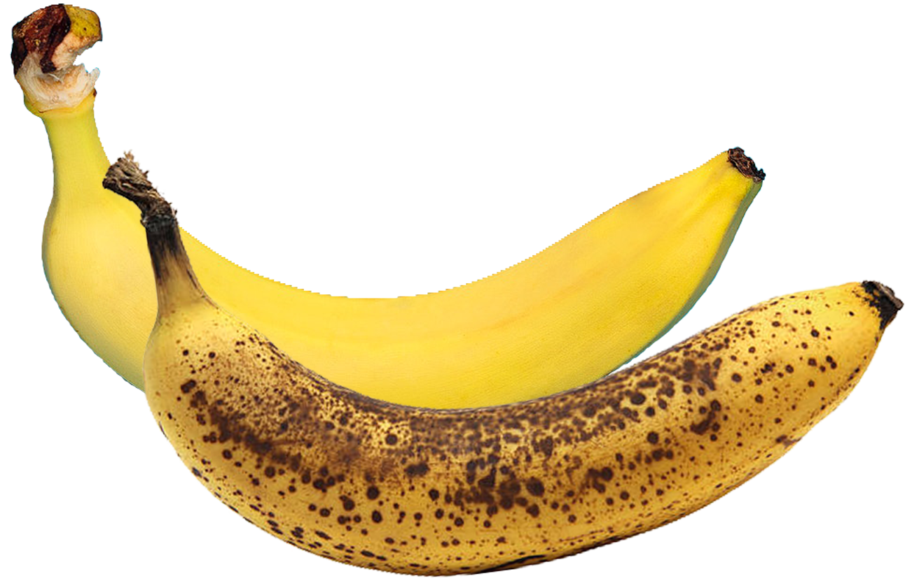

Efter kun få minutters kontakt med den friske luft oxiderer avocadoen og
bliver brun. Dette har ingen effekt på smag eller næringsværdien.

Bananer bliver også hurtigt plettede, men faktisk indikerer disse sødme i
bananen. Plettede bananer er mere effektive til at søde fx. smoothies end
bananer uden pletter.
Er udløbsdatoen gået over?
I Danmark er det påkrævet at æg er på køl, men i rigtig mange andre
lande
er de opbevaret ved stuetemperatur. Årsagen til at de kan opbevares
ved denne temperatur hænger sammen med, at æg typisk
kan holde sig i snit 1-2 måneder længere end sidste udløbsdato.